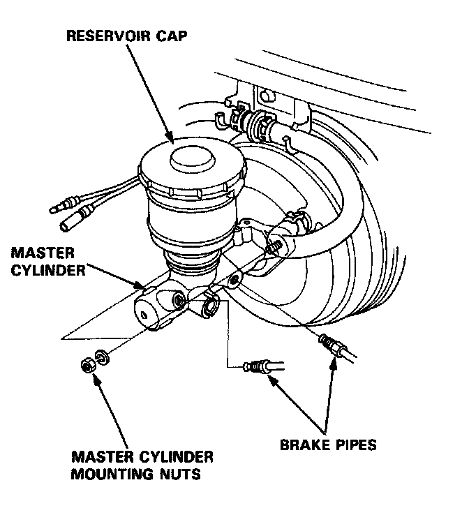
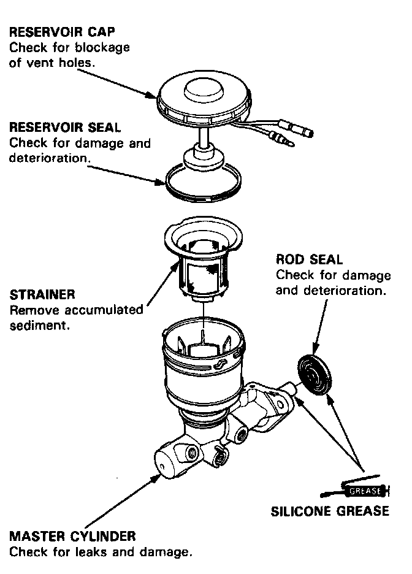
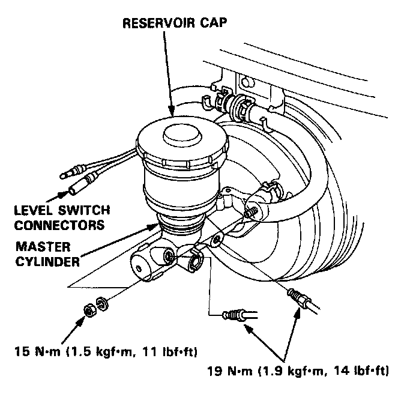

Brake Master Cylinder: Service and Repair

CAUTION:
- Be careful not to bend or damage the brake pipes when removing the master cylinder.
- Do not spill brake fluid on the car: it may damage the paint: if brake fluid does contact the paint, wash it off immediately with water.
- To prevent spills, cover the hose joints with rags or shop towels.
Removal
1. Disconnect the brake fluid level switch connectors.
2. Remove the reservoir cap from the master cylinder.
3. The brake fluid may be sucked out through the top of the master cylinder reservoir.
4. Disconnect the brake pipes from the master cylinder.
5. Remove the master cylinder mounting nuts and the master cylinder from the brake booster.

Inspection/Disassembly
CAUTION:
- Do not spill brake fluid on the car: it may damage the paint: if brake fluid does contact the paint, wash it off immediately with water.
- Before reassembling. check that all parts are free of dust and other foreign particles.
- Do not try to disassemble the master cylinder assembly. Replace the master cylinder assembly with a new part if necessary.
- Make sure no dirt or other foreign matter is allowed to contaminate the brake fluid.
Installation
CAUTION:
- When connecting the brake pipes, make sure that there is no interference between the brake pipes and other parts.
- Be careful not to bend or damage the brake pipes when installing the master cylinder.
NOTE: If replacing the master cylinder or brake booster, check and adjust the pushrod clearance before installing the master cylinder. Adjustments
1. Install the master cylinder on the brake booster with the mounting nuts.
2. Connect the brake pipes to the master cylinder.
3. Fill the master cylinder reservoir, and bleed the brake system. Service and Repair
4. Install the reservoir cap, and connect the brake fluid level switch connectors.

5. After installation, perform the following inspections and adjust if necessary.
- Brake pedal height. Adjustments
- Brake pedal free play. Adjustments